Installation
Installing bioinformatics software can be notoriously difficult for the uninitiated. EPI2ME Desktop aims to allow the analysis of anything, anywhere, by anyone. We have simplified the installation and use of bioinformatics tools and resources for Oxford Nanopore Technologies' sequencing applications.
This page is intended to complement the documentation provided inside the application for guiding the user through the installation process.
EPI2ME Desktop uses Nextflow and Docker to run bioinformatics workflows from a desktop application. The program was designed to be as easy to install and set up as possible. It therefore either bundles or installs the required dependencies (Java and Nextflow) automatically and provides guided installation for other components (Windows Subsystem for Linux (WSL) or Docker).
The following reviews the installation of software dependencies for EPI2ME Desktop version 4.0.0 onwards. The application provides a guided installation for its dependencies and many steps are automated. In more complicated installation environments the application will provide additional notes and resources to help you resolve any issues that arise.
To start, first obtain the installer package from our Downloads page. After running the installer and opening the application, select the "Launch" tab to go to Workflows and select any workflow that you would like to run. If you want to run workflows locally, proceed to select the "Run Locally" tab. If any of your required dependencies are missing, you will see a "Setup Required" button. Please press it to proceed to system setup.
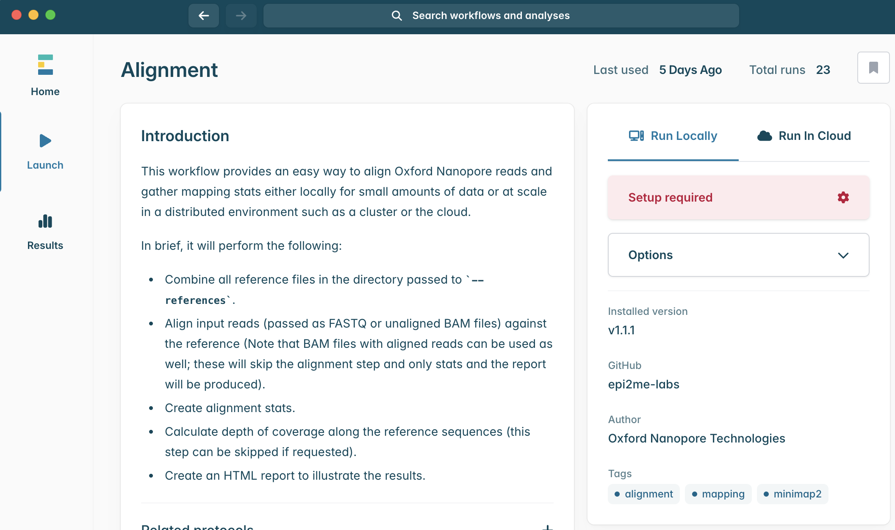
Installation on Windows
For the workflows in EPI2ME Desktop to work you will require Windows build 18362.1049 or higher. To check your Windows build version click Start then search "Windows update settings". Open the search result and at the bottom of the screen select "OS Build info". If your build is earlier you may have Windows updates available at the top of this settings menu which you can install. Note that at several points during the installation and setup prompts may appear asking for login credentials for a computer administrator.
The instructions above refer to Windows 10. The build version on Windows 11 can be found through the Settings application.
Our Nextflow on Windows guide provides details on installing EPI2ME Desktop dependencies on older Windows versions. Users having issues with the automated setup within EPI2ME Desktop may wish to read these alternative instructions. These methods are not officially supported.
The Downloads page contains a link to the latest EPI2ME Desktop installer; download and run the installer to launch the application.
The EPI2ME Application is primarily intended to be used in an online setting. It expects to be able to fetch resources from the internet. Consequently during first-run users should expect to see Windows Security Alerts such as that below, asking to Allow access. You will need the credentials of a system administrator to allow this access. The application will not function correctly without access. If your system has additional firewalls or security restrictions please consult with your system administrators.
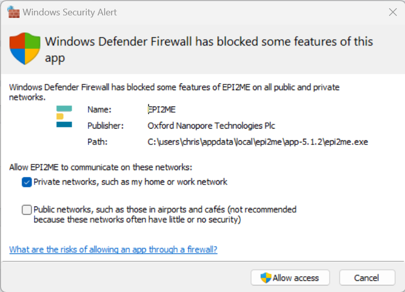
On Windows systems the only prequisite to running Nextflow workflows on your device is to install and configure a Windows Subsystem for Linux (WSL) environment. There are three steps to this process:
- Enabling the Windows WSL feature,
- Installing the WSL application, and
- Installing the EPI2ME distribution.
The EPI2ME Desktop application automates all three steps and guides users through the process.
Enabling Windows Subsystem for Linux feature and application
If the application finds that the WSL feature is not enabled on your system, it will be indicated in the "System Setup" table in local settings. Upon opening setup, you will be presented with an informational dialog and a "Setup" button for installing the WSL feature.
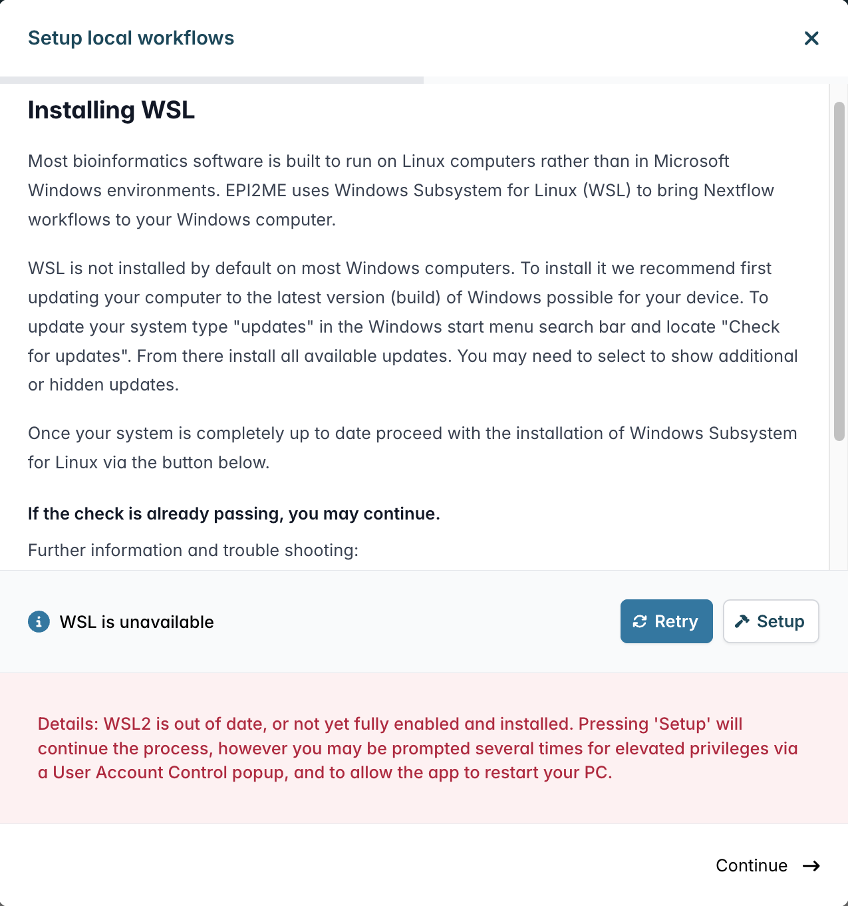
A Windows User Account Control should pop up to ask for permissions for "Windows PowerShell". This may happen more than once, and may require you to enter the username and password of a computer administrator.
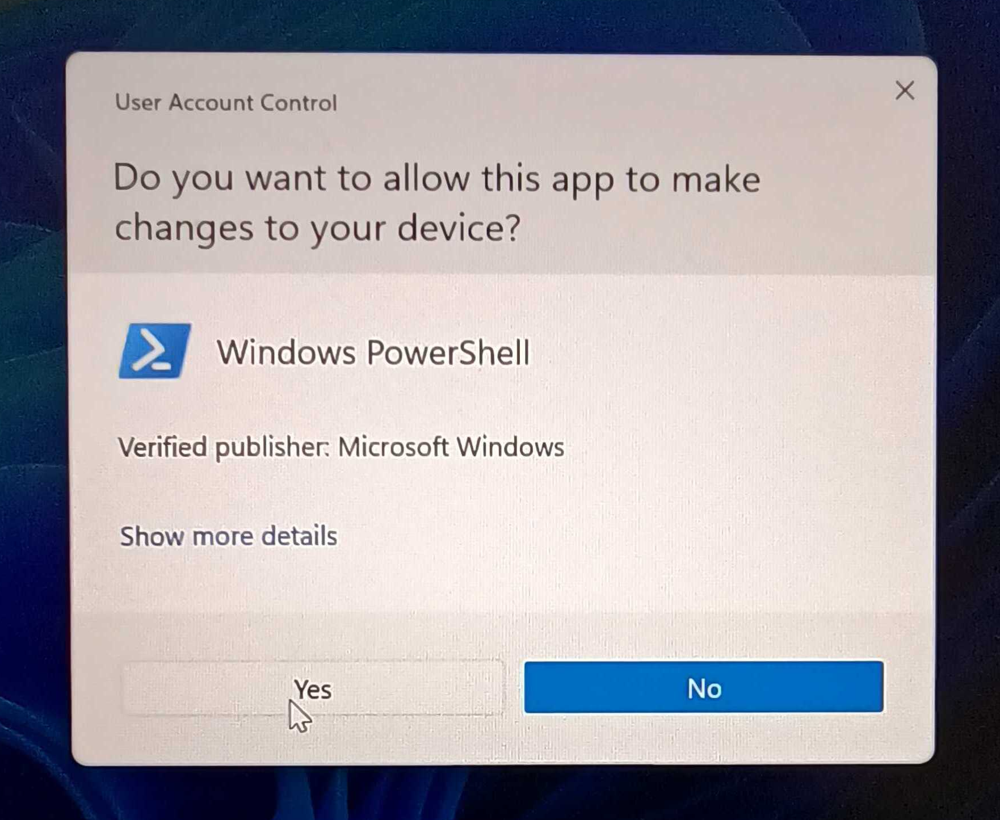
After clicking the button and granting permissions, you will be asked to restart your computer:
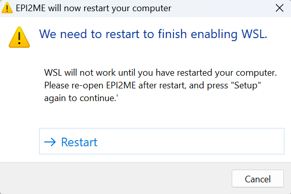
After rebooting your computer and EPI2ME Desktop, restart the Setup procedure as above. At this point the Windows WSL feature is enabled on your system but the WSL Application is not installed. You will be presented with the following message:
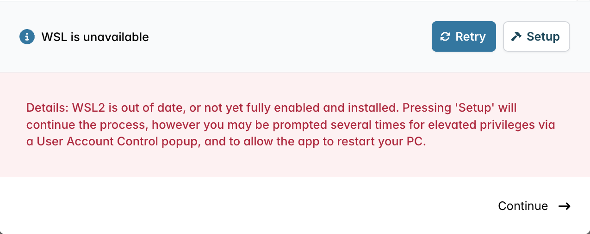
Follow the prompt to click the Setup button to continue the installation. You will again be prompted with granting permissions for "Windows PowerShell" and "Host Process for Windows Services".
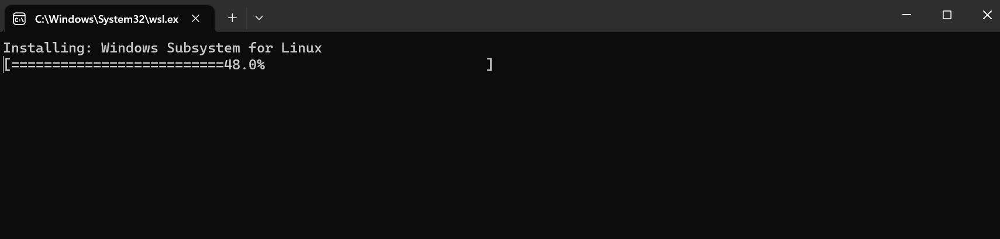
Installing EPI2ME environment on Windows
Having been through the above process, or if the WSL feature and application were already available and usable by EPI2ME Desktop, the application will request you to install the EPI2ME distribution. The EPI2ME distribution is a Linux environment pre-configured with all other prequisites for running our Nextflow workflows.
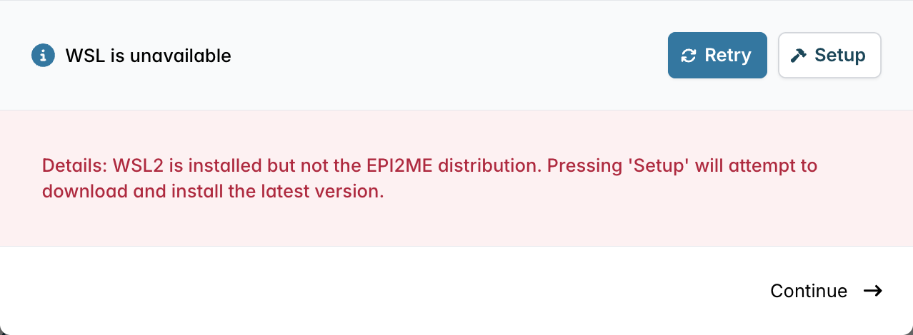
As above press the Setup button to continue the installation. This will download the EPI2ME distribution and make it available for use by Windows Subsystem for Linux.
Once all checks pass the EPI2ME Desktop application will be ready for running bioinformatics analyses!
Troubleshooting the installation
Occasionally, particularly when there is a pre-existing older install of WSL on a device, the setup may fail. In these instances it may be possible to manually reset your computer to a state without WSL installed. WSL has two components on recent builds of Windows 10 and 11. We will refer to them as the WSL "feature" and the WSL "application", this might not be what Microsoft calls them. To completely remove WSL both of these components need to be uninstalled.
To remove the "feature" type "windows features" in the Start menu search. This should display a result for "Turn Windows features on or off" from Control Panel. Open the search result, scroll to the bottom of the list of features and untick "Windows Subsystem for Linux". After pressing OK it is likely that Windows requests to restart your computer. Restart the computer in any case.
After restarting your computer the WSL "application" should be removed. To do this type "add or remove programs" in the Start menu search and click the result from Control Panel. Again scroll to near the bottom of the list and find the Windows Subsystem for Linux item. Uninstall it and restart the computer once again.
After this process try running EPI2ME Desktop again and going through the setup procedure.
To assist in any further trouble shooting with our team, please take notes (screenshots if you can) of the things which are presented. Everything should proceed smoothly but the notes will help if they do not. Should anything go wrong, open the Setting icon in the lower left-hand corner of the application. Click "View activity log" and then find any items that are red. Click them and then press "Report issue" and then "Export". This will open a Windows Exporer window with a "EPI2ME_issue_export.tar.gz" file. The file should be emailed to support@nanoporetech.com along with any other notes and screenshots.
Resource Limits on Windows
By default Windows Subsystem for Linux will use the resources on a computer fairly conservatively. We recommending increasing the resources available to WSL and therefore our Nextflow workflows.
To modify the resource available to workflows create a text file in C:\Users\<USERNAME>\ named .wslconfig (or edit it if it already exists).
Copy and paste the following content into the file and adjust as necessary. We recommend setting the memory limit to at least 16G, or 12Gb if you computer has only 16Gb in total. For the processor count we recommend setting the value to two less than the number of processor threads of your system, or a minimum of 4.
[wsl2]
memory=16GB
processors=4
Uninstalling EPI2ME Desktop on Windows
EPI2ME Desktop can be removed from your system through the typical process found in the Windows documentation.
Removal of the application does not remove user data.
By default this is stored in your userspace on your system, this is commonly something like c:\users\<username>.
More generally it can be accessed by typing %userprofile% into the address bar of Windows Explorer.
Within your userspace will be a folder named epi2melabs.
This contains all workflow code, records of workflows run, and workflow outputs.
Delete this folder only if you no longer require this data.
Note: the location of user data can be changed from the Settings panel of the EPI2ME Desktop application.
Installation on MacOS
Note: not all of our bioinformatics workflows are currently natively supported on Apple devices with ARM processors - we have an ongoing project to better support Apple silicon.
A link to the current version of EPI2ME Desktop can be found on our downloads page.
The application is provided as a standard MacOS package (.pkg) file and will install into the usual /Applications location.
Setting up Nextflow on MacOS
If Nextflow is not available you may press "Setup" to retry first time setup. This will also ensure a compatible Java version is installed. The application will attempt to use a Java installed on the system. If the system Java does not provide the required features, the application will setup an independent Java environment for its sole use.
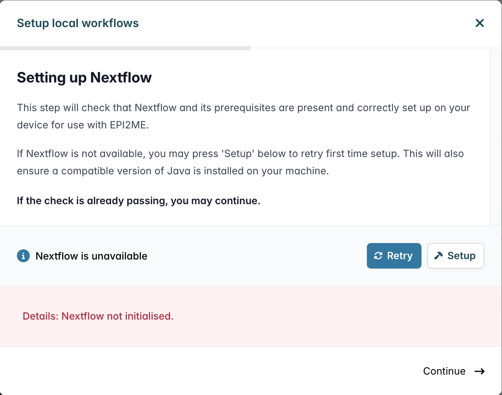
Installing Docker on MacOS
Docker is required on MacOS to run the software driving our bioinformatics workflows. Unfortunately EPI2ME Desktop cannot fully automate the install of Docker. We recommend installing Docker through Docker Desktop on MacOS. Follow the instructions on the dialog box in EPI2ME Desktop in order to set up Docker Desktop.
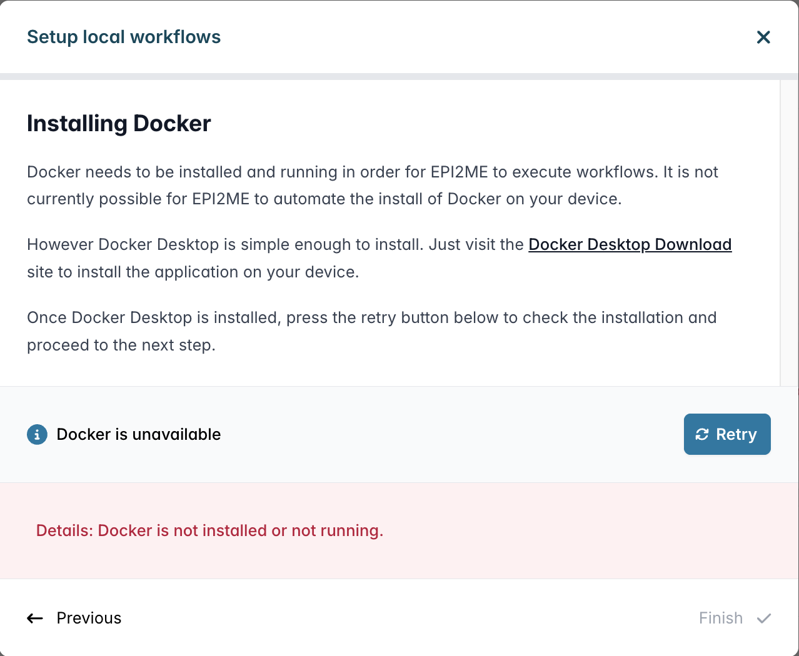
You may wish to enable Docker Desktop to start when your computer starts. To to this open Docker Desktop and then in the General settings tab tick "Start Docker Desktop when you log in". You can also scroll down and untick "Open Docker Dashboard at startup" if you want the application to start in the background. Click "Apply & restart" so that the changes take effect.
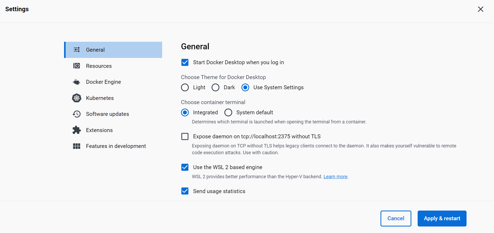
Once all checks pass the "Additional setup" dialog box will disappear and the EPI2ME application will be ready for running bioinformatics analyses!
Resource limits on MacOS
Computational resources available to workflows are restricted by the configuration of Docker Desktop. These limits can be changed through the Docker Desktop user interface.
on macOS Docker Desktop runs a small virtual machine in which all other docker processes are run. The resource requirements set in Docker Desktop control the resources of this virtual machine.
Open Docker Desktop and navigate to the Resources section of the Settings screen. We recommend setting the CPUs to one less than the maximum and memory limit to at least 16Gb.
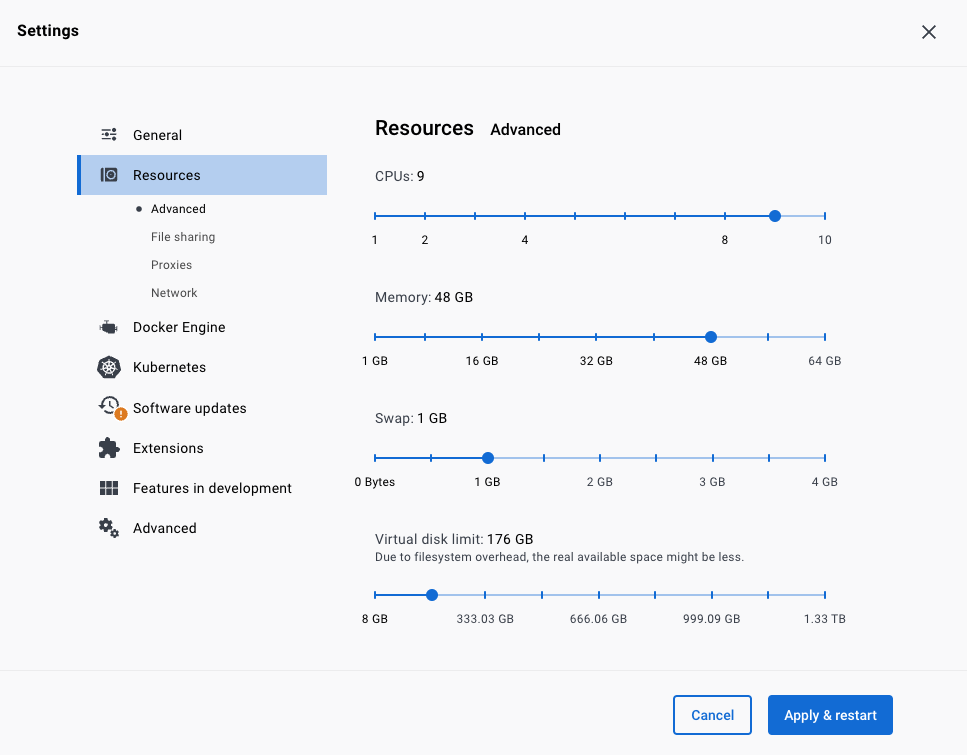
We recommend also increasing the virtual disk limit size from below the default. If errors are encountered when running workflow stating that no disk space is available, this is the setting to increase. If disk space becomes limited, it can be freed by deleting docker images from the "Images" section of the main Docker Desktop interface.
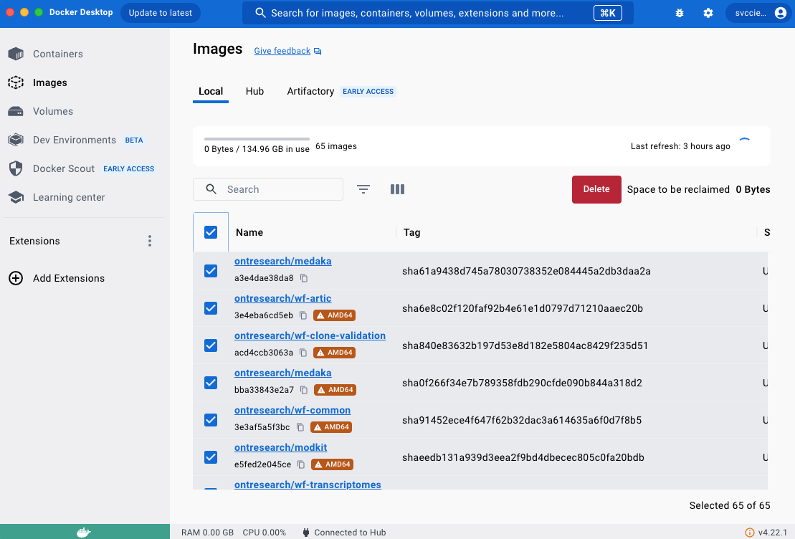
Uninstalling EPI2ME Desktop on macOS
EPI2ME Desktop can be removed from your system through the typical process found in the Mac documentation.
Removal of the application does not remove user data.
By default this is stored in your homespace on your system, this is commonly something like /Users/<username>, and can be accessed through Finder
Within your userspace will be a folder named epi2melabs.
This contains all workflow code, records of workflows run, and workflow outputs.
Delete this folder only if you no longer require this data.
Note: the location of user data can be changed from the Settings panel of the EPI2ME Desktop application.
Installation on Linux
A link to a .deb package file of the current version of EPI2ME Desktop can be found on our Downloads page.
After downloading the application can be installed via through the Software Center on Ubuntu or from the command line:
sudo apt install /path/to/deb/file
being sure to replace /path/to/deb/file with the absolute path of the downloaded file.
We provide also a .rpm installer for users of Red Hat-based Linuxes.
Setting up Nextflow on Linux
If Nextflow is not available you may press "Setup" to retry first time setup. This will also ensure a compatible Java version is installed. The application will attempt to use a Java installed on the system. If the system Java does not provide the required features, the application will setup an independent Java environment for its sole use.
Installing Docker on Linux
Docker is preinstalled on GridION and PromethION devices. If you find that Docker is missing when installing EPI2ME on one of these machines, please contact customer support.
For systems with SELinux extra steps and Nextflow configuration may be required to run docker containers.
If you are unsure what any of the commands below achieve, please consult your system administrator.
For Debian-based systems (e.g. Ubuntu) run the following in a terminal:
sudo apt update
sudo apt install -y docker.io
sudo usermod -aG docker ${USER}
sudo systemctl restart docker
You may wish to logout or restart your computer after running these commands.
For CentOS7 run the following in a terminal:
sudo yum install docker
sudo usermod -aG dockerroot ${USER}
Edit (or create) /etc/docker/daemon.json:
{
"live-restore": true,
"group": "dockerroot"
}
To test the installation of docker run:
docker run hello-world
Once all checks pass, the "Additional setup" dialog boxes will disappear and the EPI2ME application will be ready for running bioinformatics analyses!
Uninstalling EPI2ME Desktop on Linux
EPI2ME Desktop can be removed from your system through the system package manager. Refer to the documentation of your Linux distribution for further details.
Removal of the application does not remove user data.
By default this is stored in your home directory, his is commonly something like ~/<username>.
Within your home directory will be a folder named epi2melabs.
This contains all workflow code, records of workflows run, and workflow outputs.
Delete this folder only if you no longer require this data.
Note: the location of user data can be changed from the Settings panel of the EPI2ME Desktop application.
Support for GPU devices in workflows
Some of our workflows (notably anything performing basecalling with dorado or using medaka) may be able to make use of NVIDIA GPU devices. This will not be possible however without the additional setup documented here.
Use of GPUs on Windows and MacOS with our workflows is not supported. For performing basecalling on Windows or MacOS users are instead encouraged to download dorado for Windows from the dorado GitHub repository. See the notes below for further guidance.
Linux
When using Docker for accelerated computing on Linux, you will need to install the nvidia-container-toolkit.
If you observe the error "could not select device driver with capabilities gpu", you should follow the instructions to install nvidia-container-toolkit here. You will need to follow the steps to:
- Setup the package repository and the GPG key (ignore the box about experimental releases)
- Update package listings
- Install nvidia-container-toolkit
- Configure the Docker daemon to recognize the NVIDIA Container Runtime
- Restart the Docker daemon to complete the installation after setting the default runtime
Using multiple GPUs
By default workflows are configured to run GPU tasks in serial; that is, only one GPU task will be run at a time. This is to prevent the GPU from running out of memory on local execution.
When running workflows on a cluster, or in a cloud where GPU resources are isolated from one another, users should specify -profile discrete_gpus as part of the command invocation. This will allow for parallel execution of GPU tasks.
You should ask your system administrator if you need to configure any additional options to leverage GPUs on your cluster. For example, you may need to provide a special string to the workflow's --cuda_device option to ensure tasks use the GPU assigned to them by the job scheduler.
Windows
Although we do not offer support, it is possible to set up Docker to use GPUs for most versions of Windows 11 and some versions of Windows 10 and we direct users to the CUDA on WSL User Guide. Users should take note of the support constraints section to ensure their environment is suitable before following the guidance. Do not install an NVIDIA driver into your WSL2 environment.
MacOS
The container images we provide will not be able to leverage special abilities of M1 and M2 architectures. For running basecalling they will not run as performantly as if dorado had been run natively. For running medaka we have found no advantage to leveraging dedicated Apple silicon support in Tensorflow, and the standard CPU code implementations suffice for practical purposes.